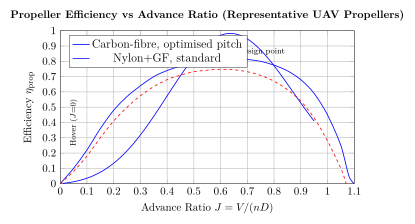
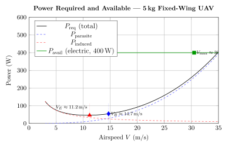
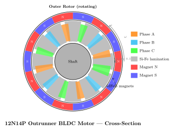

Chapter 5: Drone Propulsion Systems¶
5.1 Electric Propulsion: Principles and Energy Conversion Chain¶
5.1.1 Why Electric Dominates Small and Medium UAVs¶
The ascendancy of electric propulsion in unmanned aerial vehicles (UAVs) below roughly 150 kg maximum take-off weight (MTOW) is not accidental. It stems from a confluence of thermodynamic, mechanical, and systems-engineering advantages that collectively outweigh the single principal disadvantage—energy density—in most tactical and commercial mission profiles.
Internal combustion engines (ICEs) are fundamentally limited by the Carnot bound: even a textbook Otto-cycle engine operating between a peak cylinder temperature \(T_H \approx 2200\,\text{K}\) and an exhaust temperature \(T_L \approx 800\,\text{K}\) achieves a maximum thermal efficiency of
and practical two-stroke glow engines achieve only 15–20 % brake thermal efficiency; even the best small four-stroke petrol engines rarely exceed 28 %. In contrast, a high-quality brushless DC (BLDC) motor operating near its design point converts electrical to mechanical energy at 92–97 % efficiency. The electric drivetrain therefore wastes far less energy as heat—a critical advantage when the entire thermal budget of a small airframe is constrained.
Beyond efficiency, electric drivetrains offer:
-
Silence: acoustic signature reduction of 20–30 dB versus equivalent-thrust ICE, important for ISR missions.
-
Torque linearity: nearly flat torque–speed curve allows precise, fast thrust response (<50 ms step response for typical ESC–BLDC pairs versus 200–800 ms for ICEs).
-
Reliability: BLDC motors have two moving parts (rotor, shaft); no carburettor, no ignition timing, no valve train.
-
Scalability: the same physics applies from a 5 g micro UAV to a 100 kg VTOL cargo platform.
-
Integration: motor+ESC can be fully software-controlled via CAN bus or UART, enabling real-time fault monitoring and redundancy management.
5.1.2 The Efficiency Chain: Battery to Propeller¶
The complete electric propulsion energy-conversion chain consists of four serial stages, each with its own efficiency \(\eta_i\):
where each term is defined and bounded as follows.
Battery discharge efficiency \(\eta_{\mathrm{bat}}\).
A lithium polymer (LiPo) cell has internal resistance \(R_{\mathrm{int}}\) (typically 2–8 mΩ per cell at 25 °C). During discharge at current \(I\), the terminal voltage is
and the battery efficiency is
At a C-rate of 20 C for a 10 A h pack (200 A), with \(R_{\mathrm{int}} = 5\,\text{mΩ}\) per cell and 6S (6 cells in series, nominal \(V_{\mathrm{OCV}} = 22.2\,\text{V}\)), the drop is \(200 \times 0.030 = 6\,\text{V}\), giving \(\eta_{\mathrm{bat}} \approx 0.73\). At moderate 5 C discharge the drop is only 1.5 V, giving \(\eta_{\mathrm{bat}} \approx 0.93\). Design practice therefore minimises C-rate by using the largest feasible battery for a given power requirement.
ESC efficiency \(\eta_{\mathrm{ESC}}\).
Modern silicon-carbide (SiC) or gallium-nitride (GaN) MOSFET ESCs operating with sinusoidal field-oriented control (FOC) achieve 95–98 % efficiency at rated current. Legacy six-step commutation ESCs with silicon MOSFETs hover at 90–95 %.
Motor efficiency \(\eta_{\mathrm{motor}}\).
Large-diameter outrunner BLDC motors (e.g., T-Motor U8, 100 mm stator diameter) achieve peak \(\eta_{\mathrm{motor}} = 92–96\,\text{\%}\) near rated torque. Small, cheap motors (<30 mm diameter) may only reach 70–80 % due to relatively higher copper and iron losses.
Propeller efficiency \(\eta_{\mathrm{prop}}\).
A well-designed, geometrically optimised propeller operating near its design advance ratio achieves 75–85 % efficiency in forward flight. In static hover (advance ratio \(J = 0\)), the actuator-disk limit gives maximum efficiency
but practically hover figure of merit FM = 0.55–0.75 for commercial propellers.
Typical overall chain: \(0.92 \times 0.96 \times 0.94 \times 0.80 \approx 0.663\), meaning roughly one-third of stored battery energy is lost as heat and aerodynamic drag before producing useful thrust.
5.1.3 Specific Power at Each Stage¶
Table 5.1 summarises specific power (W/kg) at each conversion stage for a representative modern drone powertrain.
| Component | Typical Sp. Power (W/kg) | Best-in-Class (W/kg) | Notes |
|---|---|---|---|
| LiPo battery (6S, 22.2 V) | 250–350 | 400 | Tattu 22000 mAh HV |
| Li-Ion (18650 cell pack) | 150–200 | 250 | Higher energy, lower power |
| Silicon MOSFET ESC | 4 000–8 000 | 12 000 | Hobbywing Platinum |
| SiC MOSFET ESC | 8 000–15 000 | 20 000 | Zubax Myxa, T-Motor Alpha |
| BLDC outrunner motor | 3 000–6 000 | 9 000 | T-Motor U8 Lite: 9 200 W/kg |
| BLDC inrunner motor | 5 000–10 000 | 14 000 | High RPM, requires gearbox |
| Carbon-fibre propeller | (thrust/weight \(>\) 50:1) | Not a power-limited element | |
5.1.4 Endurance Equation for Electric UAVs¶
For a UAV in steady, level flight the required thrust equals drag, and the required propulsive power is
where \(\rho\) is air density, \(V\) is airspeed, \(S\) is reference wing area, and \(C_D\) is the total drag coefficient. The energy available from the battery (accounting for the minimum reserve voltage) is
where \(Q_{\mathrm{bat}}\) is the nominal capacity in ampere-hours, \(\bar{V}_{\mathrm{bat}}\) is the mean discharge voltage, and \(\eta_{\mathrm{Peukert}}\) accounts for capacity reduction at high discharge rates (Peukert exponent \(n_p \approx 1.03\)–\(1.08\) for LiPo).
The theoretical maximum flight endurance is then:
where \(P_{\mathrm{cruise}}\) is the shaft power required at the chosen cruise speed.
For a quadrotor in hover, \(P_{\mathrm{cruise}}\) must support all four rotors plus avionics; for a fixed-wing UAV, \(P_{\mathrm{cruise}}\) is the single-propeller shaft power at the speed of minimum power consumption (\(V_{E}\), derived in Section 5.10). Electric fixed-wing UAVs optimised for endurance achieve 1–3 h on LiPo; with Li-S or solid-state cells, projections reach 3–8 h at similar MTOW.
5.2 Brushless DC Motors¶
5.2.1 Operating Principle and Electromagnetic Fundamentals¶
A BLDC motor is a permanent-magnet synchronous machine (PMSM) in which the electronic commutation—formerly achieved by mechanical brushes—is performed by the ESC. The stator carries polyphase windings (usually three-phase); the rotor carries permanent magnets. The ESC energises stator phases in sequence, creating a rotating magnetic field that drags the rotor magnets along.
The fundamental torque production law is the Lorentz force on a current-carrying conductor in a magnetic field:
where \(\vec{L}\) is the conductor vector and \(\vec{B}\) is the air-gap flux density. Summing over all active conductors yields the electromagnetic torque
where \(\Phi\) is the total flux linkage per phase and \(I_q\) is the quadrature-axis (torque-producing) current component.
5.2.2 Motor Constants: KV, KT, and the Back-EMF¶
The velocity constant KV (RPM per volt, sometimes written \(K_V\)) is the most commonly quoted BLDC parameter in the drone industry. It relates the unloaded shaft speed to the applied terminal voltage:
where \(V_{\mathrm{term}}\) is the line-to-line terminal voltage minus the back-EMF drop. The torque constant \(K_T\) (N m/A) is the reciprocal of KV expressed in SI units:
so that the electromagnetic torque is simply:
where \(I\) is the phase current. A motor with \(K_V = 400\,\text{R P M V}\) has \(K_T = 60/(2\pi \times 400) \approx 23.9\,\text{mN m/A}\).
The back-EMF (counter-electromotive force) generated by the spinning rotor is:
and in steady state the voltage balance across one phase is
where \(R_{\phi}\) is the phase winding resistance and \(L_{\phi}\) is the phase inductance. In steady-state (\(dI/dt = 0\)) the copper losses are simply \(I^2 R_{\phi}\).
5.2.3 Power Equations and Efficiency¶
Electrical input power:
Mechanical output power at the shaft:
where \(\omega = 2\pi n / 60\) is the angular velocity in r a d s. Motor efficiency:
where \(P_{\mathrm{iron}}\) are the stator core (hysteresis + eddy current) losses and \(P_{\mathrm{mech,loss}}\) covers bearing friction and windage. Iron losses scale as
where \(k_h\) is the hysteresis coefficient, \(k_e\) is the eddy-current coefficient, \(f\) is the electrical frequency, and \(B_{\mathrm{pk}}\) is the peak flux density. For high-pole-count outrunner motors spinning at 3000 R P M with 14 pole-pairs, the electrical frequency is \(f = 14 \times 3000/60 = 700\,\text{Hz}\)—significantly increasing iron losses compared with a two-pole inrunner at the same RPM.
5.2.4 Motor Sizing for UAV Applications¶
The primary sizing criterion for a multirotor motor is the thrust-to-weight ratio it delivers:
where \(T_{\mathrm{static}}\) is the static thrust (hover thrust) at rated current. Typical figures of merit for commercial-grade motors:
-
Entry-level motors: \(T/W = 5\)–\(15\) (thrust in grams per gram of motor mass)
-
Mid-range motors (T-Motor MN series): \(T/W = 20\)–\(30\)
-
High-performance motors (T-Motor U8 Lite): \(T/W \approx 50\)–\(70\) with a matched propeller
For a quadrotor, the minimum thrust-to-weight ratio at each motor is dictated by the hover requirement plus a control authority margin:
where \(N_{\mathrm{motors}} = 4\) for a quadrotor and \(f_{\mathrm{margin}} \geq 2.0\) to allow for attitude control authority and one-motor-out capability on a hexarotor.
5.2.5 Stator Design: Slot-Pole Combinations¶
The stator is constructed from thin laminations (0.2–0.5 mm) of silicon steel (Fe-Si alloy, typically M270-35A or equivalent) to minimise eddy-current losses. The number of stator slots \(N_s\) and rotor poles \(N_p\) define the motor topology. Common combinations for UAV outrunners are:
| Slots (\(N_s\)) | Poles (\(N_p\)) | Notation | GCD | Key Properties |
|---|---|---|---|---|
| 12 | 14 | 12N14P | 2 | Low cogging, high pole count, smooth torque |
| 12 | 10 | 12N10P | 2 | Very popular; good balance of torque ripple and winding factor |
| 9 | 12 | 9N12P | 3 | High winding factor 0.866; cogging issue |
| 6 | 2 | 6N2P | 2 | High-speed inrunner; low pole count |
| 18 | 20 | 18N20P | 2 | High torque, low RPM; large propeller applications |
| 24 | 28 | 24N28P | 4 | Very large outrunners; heavy-lift UAVs |
The winding factor \(k_w = k_d \cdot k_p\) (distribution factor \(\times\) pitch factor) determines how effectively the winding links with the rotor flux. For a 12N14P motor, \(k_w \approx 0.933\).
5.2.6 Winding Configuration: Star vs Delta¶
The three-phase windings may be connected in star (Y) or delta (\(\Delta\)):
-
Star: Line voltage = \(\sqrt{3} \times\) phase voltage; line current = phase current. Results in higher KV for the same wire gauge. Lower circulating currents; preferred for most UAV motors.
-
Delta: Line voltage = phase voltage; line current = \(\sqrt{3} \times\) phase current. Higher torque for same bus voltage; risk of circulating third-harmonic currents; preferred for very low KV (high torque) motors.
Wire gauge (AWG or SWG) is selected to achieve a copper fill factor of \(k_f = 0.35\)–\(0.55\) in the slots. Higher fill factor increases torque density but requires precision winding machines.
5.2.7 Permanent Magnets: NdFeB and Halbach Arrays¶
All high-performance UAV BLDC motors use sintered neodymium-iron-boron (NdFeB) magnets, grade N42 to N52. Key magnetic parameters:
-
Remanence: \(B_r = 1.29\,\text{T}\) (N42) to 1.45 T (N52)
-
Coercivity: \(H_{cj} \geq 955\,\text{kA/m}\)
-
Maximum energy product: \((BH)_{\max} = 318\)–398 kJ/m³
-
Temperature coefficient of \(B_r\): \(-0.11\)%/°C (important for motors running hot)
-
Curie temperature: \(\approx310\,\text{°C}\) for standard NdFeB; motor magnets should not exceed 80 °C
A Halbach array arrangement of magnets on the rotor generates a near-sinusoidal flux distribution on the inside surface while nearly cancelling the external flux. This increases the air-gap flux density by \(\sim\)40 % over a conventional radially magnetised arrangement, enabling higher torque density. The Halbach array requires additional magnet segments and precision assembly, increasing cost.
5.2.8 Thermal Model and Cooling¶
Copper losses \(P_{Cu} = I^2 R_\phi \cdot N_{\mathrm{phases}}\) are the dominant heat source at high current. The steady-state winding temperature rise above ambient is:
where \(R_{\theta,\mathrm{winding-ambient}}\) (°C/W) is the total thermal resistance from winding to ambient. This is decomposed as:
For a 100 mm outrunner motor with natural convection in airflow, \(R_{\theta,\mathrm{total}} \approx 0.5\,\text{°C/W}\), meaning \(P_{Cu} = 20\,\text{W}\) produces a 10 °C temperature rise—well within the 150 °C limit of Class F winding insulation (polyamide-imide).
Motors in enclosed ducts (ducted fans, fuselage-embedded motors) require forced-air cooling ducts sized for a minimum airflow of 5 L/s per 100 W of copper loss.
5.2.9 Inrunner vs Outrunner Comparison¶
| Property | Inrunner | Outrunner |
|---|---|---|
| Rotor position | Inside stator | Outside stator |
| Typical KV | 1000–6000 R P M V | 100–1500 R P M V |
| Torque density | Lower (small radius) | Higher (large radius moment arm) |
| Requires gearbox | Often yes (for large propellers) | Rarely |
| Rotational inertia | Low (fast response) | Higher (smoother flight) |
| Bearing load | Simple, axial | Complex; side-load on long prop shafts |
| Cooling | Easier (airflow over shell) | Stator cooling limited |
| Typical application | High-speed fixed-wing, jets | Multirotor, large fixed-wing |
| Example | Scorpion 4035-560KV | T-Motor U8 Lite 100KV |
5.2.10 Representative Motor Specifications¶
The T-Motor U8 Lite (100 K V) represents the state of the art for heavy-lift multirotor applications. With a 28-inch propeller at full throttle it produces 9.5 kg static thrust at 920 W input—a static efficiency of 10.3 g/W. The motor mass is only 196 g, giving a specific power of \(920 / 0.196 \approx 4694\,\text{W/kg}\).
The Scorpion 4035-560KV targets high-performance fixed-wing UAVs: 560 KV, stator diameter 40 mm, maximum power 2100 W, mass 272 g, specific power 7721 W/kg.
5.3 Electronic Speed Controllers¶
5.3.1 Six-Step Commutation (Trapezoidal Drive)¶
The classical ESC architecture uses six power MOSFETs in a three-phase bridge. At any instant, two phases are energised (one high-side, one low-side MOSFET conducting) while the third phase floats. The sequence of energisation steps produces six discrete commutation intervals per electrical revolution. Detection of the zero crossing of the back-EMF on the floating phase provides the commutation timing without position sensors (sensorless control). The commutation timing is advanced by an angle \(\theta_{\mathrm{adv}}\) ahead of the zero crossing to compensate for winding inductance:
where \(\omega\) is the electrical angular velocity. Under-advance causes the current to lag the torque axis, reducing effective torque; over-advance causes negative torque and heating. Most ESCs implement an auto-advance algorithm that sweeps the advance angle and maximises a throttle response metric.
Six-step drive produces trapezoidal back-EMF and 30%–40% torque ripple, which translates to audible noise at the commutation frequency. For a 14-pole motor at 3000 R P M: commutation frequency \(= 14/2 \times 3000 \times 6 / 60 = 2100\,\text{Hz}\)—within the 1–4 kHz acoustic sensitivity peak of the human ear, hence the characteristic whine of six-step-driven motors.
5.3.2 Field-Oriented Control (FOC) — Sinusoidal Drive¶
FOC (also called vector control) decouples the motor current into flux-producing (\(d\)-axis) and torque-producing (\(q\)-axis) components using the Park and Clarke transforms:
Clarke transform (three-phase to two-phase stationary \(\alpha\beta\)):
Park transform (stationary \(\alpha\beta\) to rotating \(dq\)):
where \(\theta_e\) is the electrical rotor angle. In steady-state operation of a surface-mounted PMSM (as used in most UAV motors, \(L_d \approx L_q\)), maximum efficiency is achieved with \(I_d = 0\) (maximum torque per ampere, MTPA), so all current is in the \(q\)-axis. The torque is then simply \(T = \frac{3}{2} p K_T I_q\), where \(p\) is the number of pole pairs.
FOC reduces torque ripple to <5 % and eliminates the commutation whine, replacing it with the much higher-frequency PWM carrier. FOC requires either an encoder/resolver for rotor angle \(\theta_e\) or a motor model-based observer. The Zubax Myxa ESC and T-Motor Alpha series implement sensorless FOC with a flux-linkage observer that estimates \(\theta_e\) from the phase voltages and currents.
5.3.3 PWM Switching and Gate Drive¶
The power stage switches at a carrier frequency \(f_{\mathrm{sw}}\) of 8–48 kHz. Higher \(f_{\mathrm{sw}}\) reduces current ripple
where \(d\) is the duty cycle, but increases switching losses \(P_{\mathrm{sw}} \propto f_{\mathrm{sw}} \cdot (E_{\mathrm{on}} + E_{\mathrm{off}})\). Silicon MOSFETs have switching energies of 10–100 µJ per transition; SiC MOSFETs achieve 1–10 µJ, enabling 100 kHz switching with lower total losses. Dead-time between high-side and low-side MOSFET switching prevents shoot-through (cross-conduction) and is typically set to 100–500 ns.
5.3.4 Digital Communication Protocols¶
Modern flight controllers communicate throttle commands to ESCs via digital protocols that eliminate the latency and noise sensitivity of analogue PWM:
-
DSHOT 300/600/1200: one-wire digital protocol at 300/600/1200 kbit/s; 11-bit throttle value (0–2047), 1-bit telemetry request, 4-bit CRC. Latency <200 µs.
-
UART/CAN telemetry: bidirectional; ESC reports RPM, current, voltage, temperature to FC at 50–200 Hz.
-
PWM (legacy): 50 Hz–400 Hz; 1000–2000 µs pulse width; susceptible to noise; 20 ms latency at 50 Hz.
5.3.5 ESC Protection Features and Regenerative Braking¶
Production-quality ESCs implement multiple protection modes:
-
Overcurrent: peak current sensing via shunt resistor or Hall sensor; hardware cutoff within 1–5 µs.
-
Over-temperature: NTC thermistor on power stage; derating above 80 °C; cutoff at 120 °C.
-
Over-voltage: monitors DC bus; protects against regenerative voltage spikes.
-
Under-voltage: low-voltage cutoff (LVC) at \(V_{\mathrm{min}} = 3.0\)–\(3.3\) V/cell to protect LiPo cells from deep discharge.
-
Regenerative braking: during rapid descent or rotor deceleration, the motor acts as a generator, returning energy to the battery. For a 10 kg UAV descending at 3 m/s, the recovered power is approximately \(P_{\mathrm{regen}} = mgv\eta \approx 10 \times 9.81 \times 3 \times 0.75 \approx 221\,\text{W}\), meaningful for medium-duration missions.
5.4 Propellers¶
5.4.1 Propeller Geometry and Notation¶
A propeller is defined by its diameter \(D\) (m), pitch \(P\) (m), and the chord \(c(r)\) and twist \(\theta(r)\) distributions along the non-dimensional radius \(\bar{r} = r/R\) (where \(R = D/2\)). The geometric pitch angle at any section is
and the local blade angle of attack is \(\alpha(r) = \theta(r) - \phi(r)\), where \(\phi(r)\) is the inflow angle. A well-designed propeller has a nearly constant angle of attack across the span, requiring more twist at the root than the tip—this is the basis of optimal twist distribution.
5.4.2 Non-Dimensional Coefficients and Similarity Laws¶
Using the propeller shaft speed \(n\) (r e v s) and diameter \(D\) as reference scales, the thrust and power are expressed as:
where \(\rho\) is the air density. The advance ratio:
characterises the flight condition. At \(J=0\) (static/hover), \(C_T\) and \(C_P\) reach their maximum values; as \(J\) increases toward the propeller’s zero-thrust advance ratio \(J_0\), both coefficients decrease. Propeller efficiency in forward flight is:
which peaks at an intermediate \(J\) value and is zero at both \(J=0\) (static) and \(J=J_0\) (zero thrust).
5.4.3 Static Thrust in Hover¶
For a quadrotor in hover, each propeller operates at \(J = 0\). The static thrust produced by a rotor of diameter \(D\) spinning at \(n\) rev/s is:
where \(C_{T,0}\) is the static thrust coefficient (typically 0.08–0.14 for well-designed UAV propellers). Using actuator disk theory, the minimum power required to generate thrust \(T\) from a disk of area \(A = \pi D^2/4\) is:
and the figure of merit is defined as:
with \(FM = 0.55\)–\(0.75\) for drone propellers and \(FM = 0.75\)–\(0.85\) for helicopter rotors (which benefit from higher design investment in chord and twist optimisation).
5.4.4 The Pitch-Speed Relationship¶
The theoretical pitch velocity (speed at which a propeller with pitch \(P\) would produce zero thrust in ideal conditions) is:
where \(P\) is in metres and \(n\) in rev/s. For a 10 in (\(= 0.254\,\text{m}\)) pitch propeller spinning at 6000 RPM (\(n = 100\) rev/s), \(V_{\mathrm{pitch}} = 0.254 \times 100 = 25.4\,\text{m/s}\). Actual zero-thrust speed is approximately \(0.85 V_{\mathrm{pitch}}\) due to aerodynamic losses.
5.4.5 Blade Element Momentum Theory (BEMT)¶
BEMT combines local blade-element aerodynamics with momentum theory. At a strip of width \(dr\) at radius \(r\), the elemental thrust and torque are:
where \(W\) is the local resultant velocity, \(\phi\) is the inflow angle, \(N_b\) is the number of blades, and \(C_L\), \(C_D\) are section lift and drag coefficients. Equating momentum-theory thrust to blade-element thrust at each strip and solving iteratively gives the complete performance map \(C_T(J)\) and \(C_P(J)\). BEMT is the foundation of all propeller design codes (XROTOR, QPROP, OpenProp).
5.4.6 Materials and Manufacturing¶
| Material | Density (g/cm\(^3\)) | E (GPa) | \(\eta_{\mathrm{prop}}\) (rel.) | Cost (rel.) | Notes |
|---|---|---|---|---|---|
| Nylon (PA6-GF30) | 1.35 | 6 | 0.90 | 1× | Most common; flexible, cheap |
| Polycarbonate | 1.20 | 2.5 | 0.85 | 1.2× | Impact-resistant; flexible |
| Carbon fibre (UD pre-preg) | 1.55 | 135 | 1.00 | 5–10× | Maximum stiffness; brittle |
| Wood (beechwood) | 0.70 | 14 | 0.97 | 2× | Excellent damping; heavy; moisture-sensitive |
| CFRP injection moulded | 1.40 | 30 | 0.95 | 3–5× | Production-scale; good stiffness |
Carbon-fibre propellers are stiffer, meaning they maintain their designed geometry under aerodynamic load, preserving the design \(C_T\) and \(C_P\) values. Flexible nylon propellers deflect under load, changing effective pitch and reducing efficiency by 5–10 % at high thrust levels.
5.4.7 Fixed Pitch vs Variable Pitch Propellers¶
Fixed-pitch (FP) propellers dominate small UAVs due to simplicity and zero mechanical complexity. The efficiency penalty arises because an FP propeller is optimised for a single (\(J\), \(n\)) operating point; performance degrades away from that point.
Variable-pitch (VP) propellers, found on turboprop UAVs and some advanced electric UAVs (e.g., Quaternium HYBRiX), allow the pitch to be adjusted in flight. Benefits:
-
Maintain optimal \(C_T/C_P\) ratio across a wide airspeed range.
-
Enable propeller feathering (zero drag in glide).
-
Allow reverse thrust for short landing roll.
The pitch actuator (servo or pneumatic) adds mass and mechanical complexity. Net benefit is 10–20 % efficiency gain over the mission envelope—worth it for long-endurance fixed-wing UAVs, not justified for short-mission multirotors.
5.4.8 Propeller Sizing Rules of Thumb¶
For multirotors: diameter \(D \approx 0.7 \cdot L_{\mathrm{arm}}\) where \(L_{\mathrm{arm}}\) is the motor-to-motor centre distance. Larger, slower-turning propellers are always more efficient (lower disk loading = lower induced velocity = lower induced power). Disk loading \(DL = W_{\mathrm{UAV}} / (N_{\mathrm{rotors}} \cdot \pi D^2/4)\):
-
Small quadrotor: \(DL \approx 10\,\text{N/m²}\) (high efficiency)
-
Medium delivery drone: \(DL \approx 40\)–\(80\,\text{N/m²}\)
-
Helicopter: \(DL \approx 100\)–\(200\,\text{N/m²}\)
-
Jump jet: \(DL \approx 10000\,\text{N/m²}\) (very poor hover efficiency)
5.5 Internal Combustion Engines for UAVs¶
5.5.1 Two-Stroke Glow and Petrol Engines¶
Two-stroke engines dominate the sub-10 cm³ displacement range for UAVs due to their unmatched power-to-weight ratio and mechanical simplicity. The thermodynamic cycle completes in one crankshaft revolution: intake/compression on the upstroke, ignition/expansion/exhaust on the downstroke. Brake mean effective pressure (BMEP):
where \(W_b\) is the brake work per cycle, \(V_d\) is the displacement volume, \(P_b\) is the brake power, and \(\tau\) is the number of crankshaft revolutions per cycle (\(\tau = 1\) for 2-stroke, \(\tau = 2\) for 4-stroke). Typical BMEP values:
-
Small 2-stroke glow (10–50 cm³): BMEP \(\approx\) 5–7 bar
-
2-stroke petrol with EFI: BMEP \(\approx\) 7–9 bar
-
4-stroke naturally aspirated: BMEP \(\approx\) 8–10 bar
Power-to-weight ratios for UAV 2-stroke engines:
-
Glow/nitromethane (e.g., OS Engines .91 AX): 0.9 kW/kg
-
Petrol (e.g., DLE-20): 1.2 kW/kg
-
High-performance petrol (e.g., 3W-28i): 1.8 kW/kg
Brake thermal efficiency of 2-stroke glow engines is poor: 15–18 % due to short-circuit losses (fresh charge lost through exhaust port before it closes), pumping losses, and the inherent irreversibility of the Otto cycle at moderate compression ratios (\(r_c = 8\)–\(12\):1 for glow; \(r_c = 10\)–\(14\):1 for petrol).
5.5.2 Four-Stroke Petrol Engines¶
Four-stroke engines gain efficiency through the scavenging stroke (pumping exhaust and inducting fresh charge on separate strokes), higher compression ratios (\(r_c = 10\)–\(14\):1 for naturally aspirated), and better control over combustion phasing. Brake thermal efficiency of 25–30 % is typical for a well-tuned UAV 4-stroke. The price is higher mass per unit power due to the valve train, and lower power per displacement (half as many power strokes per revolution).
Rotax 912 ULS: widely used for MALE-class UAVs (Predator A, LUNA). Four-stroke, four-cylinder, horizontally opposed, 1352 cm³, 73.5 kW (98.6 hp) at 5800 RPM, mass 56.6 kg (without propeller and fluids). Specific power: \(73.5/56.6 \approx 1.30\,\text{kW/kg}\). SFC: \(\approx 260\,\text{g/(kW h)}\).
5.5.3 Fuel Consumption and Specific Fuel Consumption¶
Brake-specific fuel consumption (BSFC) is the primary fuel efficiency metric for ICEs:
where \(\dot{m}_f\) is the fuel mass flow rate and \(P_b\) is the brake power output. Typical BSFC values:
-
2-stroke glow engine: 600–900 g/(kW h)
-
2-stroke petrol: 350–500 g/(kW h)
-
4-stroke petrol: 250–320 g/(kW h)
-
Diesel (heavy fuel, e.g., DeltaHawk): 210–270 g/(kW h)
The range of a fuel-powered fixed-wing UAV is given by the Breguet range equation:
where \(L/D\) is the lift-to-drag ratio, \(W_0\) is the initial gross weight, and \(W_1\) is the final (fuel-burned) weight. For a petrol UAV with BSFC \(= 400\,\text{g/(kW h)}\), \(L/D = 15\), \(\eta_{\mathrm{prop}} = 0.80\), and fuel fraction \(W_f/W_0 = 0.30\): \(R \approx 100 \times 0.80 / (9.81 \times 0.111 \times 10^{-3}) \times 15 \times \ln(1/0.70) \approx 1070\,\text{km}\).
5.5.4 Ignition and Fuel Systems¶
UAV ICEs use either:
-
CDI (capacitor discharge ignition): simple, reliable, self-contained; ignition energy 30–100 mJ per spark; timing is fixed relative to TDC.
-
Electronic fuel injection (EFI): solenoid injectors replace carburettor; stoichiometric \(\lambda = 1\) control via lambda sensor; BSFC improvement 10–15 %; essential above 4000 m altitude where carburettor calibration drifts.
5.5.5 Vibration Isolation¶
A single-cylinder 2-stroke engine produces a primary unbalanced force at firing frequency \(f_{\mathrm{eng}} = n/60\) Hz (for \(n\) in RPM). This typically falls in the 50–150 Hz range—exactly where airframe structural resonances occur. Vibration is attenuated by elastomeric mounts (silicone or Lord mounts) designed so that the mount natural frequency \(f_n = f_{\mathrm{eng}} / \sqrt{2}\) places the engine above the mount resonance peak (transmissibility \(< 1\) above \(\sqrt{2} f_n\)). For a 2 kg engine on four 20 mm diameter silicone mounts with stiffness \(k = 5000\,\text{N/m}\) each, the natural frequency is:
attenuating engine vibration above 22 Hz (i.e., engines above \(\sim\)1320 RPM are effectively isolated).
5.6 Gas Turbine and Jet Engines for UAVs¶
5.6.1 Micro-Turbojet Architecture and Thermodynamic Cycle¶
Micro-turbojets (50–500 N thrust class) for UAVs are single-shaft, single-stage centrifugal-compressor engines. The Brayton cycle efficiency is:
where \(T_1\) is the inlet total temperature, \(T_3\) is the turbine inlet total temperature, \(\Pi_c\) is the compressor pressure ratio, and \(\gamma = 1.4\) for air. For a typical micro-turbojet with \(\Pi_c = 4\) and \(\gamma = 1.4\):
In practice, compressor isentropic efficiency \(\eta_c \approx 0.72\)–\(0.78\) and turbine isentropic efficiency \(\eta_t \approx 0.82\)–\(0.86\) for uncooled micro-turbine stages, reducing overall thermal efficiency to 12–18 %.
5.6.2 Compressor Stage¶
Centrifugal compressors are universally used in micro-turbojets because:
-
Single-stage compression ratios of 3:1–8:1 are achievable.
-
Robust to foreign object ingestion.
-
Simpler manufacturing (single-piece titanium or inconel impeller, CNC machined).
-
Tip speeds of 400–550 m/s; stresses approach material limits.
The slip factor \(\sigma\) (ratio of actual to ideal exit whirl velocity) is typically \(0.85\)–\(0.92\) for backward-swept impellers. The work input coefficient:
where \(U_2\) is the impeller tip speed and \(c_p = 1005\,\text{J/(kg K)}\). For \(\sigma = 0.90\), \(U_2 = 500\,\text{m/s}\), \(T_1 = 288\,\text{K}\): \(\psi = 0.90 \times 500^2 / (1005 \times 288) \approx 0.776\).
5.6.3 Combustor and Turbine¶
Micro-turbojet combustors burn Jet-A or JP-8. The primary zone equivalence ratio \(\phi_{\mathrm{pz}} = 1.0\)–\(1.4\) (rich) for stability, with dilution air bringing the exit temperature down to the turbine inlet temperature (TIT). For micro-turbojets, uncooled single-stage axial turbines limit TIT to 800–950 °C (nickel superalloy, directionally solidified).
The specific fuel consumption for turbojets:
typical values: micro-turbojet 80–120 mg/N/s; small turbofan 20–35 mg/N/s.
5.6.4 Turboprop for UAVs and SFC Comparison¶
Turboprop engines provide higher propulsive efficiency than turbojets at airspeeds below 600 km/h because the large propeller operates at much higher Froude efficiency. The equivalent specific fuel consumption in power terms (specific power consumption):
compared with 420–600 g/(kW h) effective for a turbojet at 300 km/h.
| Engine Type | Example | BSFC or TSFC | P/W (kW/kg) | Application |
|---|---|---|---|---|
| 2-stroke petrol | DLE-170 | 400 g/kWh | 1.5 | MALE fixed-wing |
| 4-stroke petrol | Rotax 912 | 260 g/kWh | 1.3 | MALE, HALE |
| Wankel rotary | UAV Engines AR731 | 310 g/kWh | 1.8 | Fixed-wing, medium UAV |
| Diesel | DeltaHawk DH180 | 215 g/kWh | 0.9 | Long-endurance |
| Micro-turbojet | JetCat P300 | 100 mg/Ns | 8.0 | Target drones, UCAV |
| Small turbofan | Williams FJ44 | 23 mg/Ns | 12.0 | MALE jet UAV |
| Turboprop | PBS TP100 | 320 g/kWh | 5.5 | Medium UAV |
| BLDC + LiPo | T-Motor U8+6S | — | 4.7 | Multirotor, short mission |
5.6.5 FADEC: Full Authority Digital Engine Control¶
Modern UAV gas turbines incorporate a FADEC unit that:
-
Controls fuel flow via a servo-driven metering valve (closed-loop on \(N\) RPM and TIT).
-
Manages start sequence: ignition, light-off detection, warm-up acceleration ramp.
-
Enforces acceleration and deceleration limiters to prevent compressor surge and rich blow-out.
-
Monitors and logs engine health parameters: shaft speed, TIT, oil pressure, fuel flow.
-
Interfaces with the airframe’s flight management system via ARINC 429 or CAN bus.
FADEC adds 0.5–2.0 kg to the engine system mass but delivers 3–7 % BSFC improvement through optimised fuel scheduling.
5.7 Hybrid Propulsion Systems¶
5.7.1 Series Hybrid Architecture¶
In a series hybrid, the ICE drives an electrical generator; the generator output powers the motor(s) directly and/or charges the battery. The propeller is driven only by the electric motor(s). This architecture decouples the ICE operating point from the flight demand, allowing the ICE to run continuously at its best BSFC point:
which typically occurs at 70–85% of maximum rated power. The battery acts as a buffer, absorbing or supplying the difference between ICE output and motor demand:
The battery State of Charge (SoC) is controlled by the power management algorithm to remain within \([\mathrm{SoC}_{\min}, \mathrm{SoC}_{\max}] = [0.20, 0.80]\), protecting cell life and maintaining available buffer capacity. In charge-sustaining mode, the time-average of \(P_{\mathrm{bat}} = 0\).
5.7.2 Parallel Hybrid Architecture¶
The parallel hybrid connects both ICE and electric motor mechanically to the propeller shaft (or reduction gearbox). A clutch allows either or both to contribute thrust simultaneously. During climb (high power demand), both ICE and motor contribute; during cruise (low power), the ICE alone drives the propeller, while the motor can regenerate to recharge the battery (if the ICE output exceeds cruise power). Mathematical power split:
with \(P_{\mathrm{motor}} < 0\) during regeneration.
5.7.3 Range Extension Potential¶
The energy density of petrol (\(\approx 43\,\text{MJ/kg}\), or roughly 12 kW h/kg) is approximately 60× that of LiPo batteries (\(\approx 0.2\,\text{kW h/kg}\)) at the cell level. Even accounting for the lower efficiency of the ICE (\(\eta_{\mathrm{ICE}} \approx 0.28\)) versus the direct electrical chain (\(\eta_{\mathrm{elec}} \approx 0.90\)), the effective energy available per kilogram of fuel is:
compared with \(E_{\mathrm{eff,bat}} = 0.20 \times 0.90 \approx 0.18\,\text{kW h/kg}\) for LiPo—a 19× advantage for fuel. A hybrid system therefore offers 2–4× endurance extension compared with a pure electric system of the same MTOW, depending on the power mix and battery fraction.
Quaternium HYBRiX 2.1
is the leading commercial example: a hybrid-electric multirotor with a 36 cm³ Zenoah two-stroke engine driving a 1.8 kW generator, supplemented by a 6S LiPo battery pack. MTOW 25 kg, maximum endurance 4.5 h (with 1 kg payload), compared with \(\sim35\,\text{min}\) for an equivalent pure-electric multirotor.
5.8 Alternative and Emerging Propulsion Technologies¶
5.8.1 Hydrogen Fuel Cells¶
Proton exchange membrane (PEM) fuel cells oxidise hydrogen electrochemically:
The theoretical open-circuit voltage of a single cell is 1.23 V (Nernst equation at standard conditions). Practical cell voltage at rated current density \(j \approx 0.5\)–\(1.0\,\text{A/cm²}\) is 0.6–0.8 V due to activation, ohmic, and concentration overpotentials. Stack efficiency (electrical output / hydrogen LHV) is typically 45–60 %.
Hydrogen gravimetric energy density: 120 MJ/kg (LHV)—nearly 3\(\times\) petrol—but compressed H\(_2\) at 350 bar in a Type IV carbon-fibre tank stores 5.5 kW h/kg of system energy density (tank + hydrogen), versus \(\sim\)12 kW h/kg for petrol in an aluminium tank. At 700 bar, system energy density reaches 7–8 kW h/kg—competitive with, and potentially superior to, diesel for long-endurance UAV missions.
Specific power of PEM FC stacks: 800–2500 W/kg (stack only); 400–900 W/kg (complete system including BoP). The Intelligent Energy 800 W module (0.9 kg) achieves \(888\,\text{W/kg}\) at stack level.
5.8.2 Solar Photovoltaic Propulsion¶
Solar-powered UAVs (HALE class) harvest irradiance \(G_{\mathrm{s}} \approx 1361\,\text{W/m²}\) (solar constant) reduced by atmospheric absorption to \(G \approx 800\)–\(1000\,\text{W/m²}\) at the surface. The available electrical power is:
where \(A_{\mathrm{PV}}\) is the panel area, \(\eta_{\mathrm{PV}}\) is the cell efficiency, and \(\theta_z\) is the sun zenith angle. Multi-junction GaAs cells achieve \(\eta_{\mathrm{PV}} = 28–32\,\text{\%}\) (IMM cells: 32.6% single-cell record). Si cells: \(\eta_{\mathrm{PV}} \approx 20–24\,\text{\%}\).
The energy balance for a solar HALE UAV over 24 hours must satisfy:
including battery-stored surplus from daytime to power the UAV through the night. The Airbus Zephyr S achieves perpetual flight (>25 days demonstrated): wingspan 25 m, MTOW 75 kg, cruising power \(\sim1.6\,\text{kW}\), solar array area \(\sim22\,\text{m²}\), amorphous silicon cells.
5.8.3 Laser Power Beaming¶
A ground- or satellite-based laser illuminates a photovoltaic or thermophotovoltaic (TPV) receiver on the drone. The receiving cell is optimised for the laser wavelength (e.g., GaAs at 808 nm or 1064 nm). Conversion efficiency 50–60 % at the laser wavelength is achievable with resonant cells. Key constraints:
-
Beam divergence limits range: a 1 m transmit aperture at 1 µm wavelength has diffraction-limited divergence \(\theta \approx \lambda/D = 10⁻⁶\,\text{rad}\), giving a 1 m spot at 1 km.
-
Atmospheric absorption and turbulence degrade beam quality.
-
Laser-to-electricity conversion: wall-plug efficiency of high-power diode lasers \(\approx\)55–70%, reducing end-to-end efficiency to 25–40 %.
-
Regulatory (eye safety), strategic (dependency on ground station), and cloud coverage limitations restrict operational scenarios.
5.8.4 Flapping Wing (Ornithopter) Propulsion¶
At very low Reynolds numbers (\(Re = \rho V c / \mu < 10^4\)), conventional fixed propellers lose efficiency dramatically. Flapping-wing propulsion exploits unsteady aerodynamics—leading-edge vortex (LEV) capture, wake capture, and rotational lift—that persist at \(Re = 10^2\)–\(10^4\). The Harvard RoboBee (\(80\,\text{mg}\), wingspan 30 mm) uses piezoelectric actuators at 120 Hz, achieving a lift-to-power ratio of \(100\,\text{mN/W}\) at \(Re \approx 10^4\). Scaling to larger platforms reduces the LEV advantage; above \(\sim500\,\text{g}\), conventional rotors become more efficient.
5.8.5 Electrohydrodynamic (EHD) / Ionic Wind Thrusters¶
EHD propulsion uses corona discharge to ionise air and accelerate ions through an electric field, transferring momentum to neutral air molecules:
where \(I\) is the corona current, \(d\) is the emitter-to-collector distance, and \(k_i\) is the ion mobility (1.5–2.5 cm²/(V s) in air). The MIT ionic wind demonstrator (2018, Nature) flew a 2.45 kg fixed-wing aircraft on EHD thrust alone. Thrust density is extremely low (\(\approx2\,\text{N/kW}\) vs \(>\)100 N/kW for BLDC+prop), limiting EHD to stealth applications where acoustic silence is paramount. Power-to-thrust efficiency is less than 1%, orders of magnitude below conventional propulsion.
5.9 Propulsion System Integration¶
5.9.1 Motor Mounting Configurations¶
Tractor (front-mounted, pulling)
is the standard configuration for fixed-wing UAVs. Advantages: cleaner propeller inflow (undisturbed freestream); propeller slipstream over wing improves lift at low speed; simple structural attachment to nose bulkhead. Disadvantages: propeller damage on belly landings; noise and vibration transmitted forward.
Pusher (rear-mounted, pushing)
places the propeller behind the fuselage: forward fuselage is free for sensor payloads (EO/IR ball); propeller in shadow of fuselage (increased turbulence → noise); reduced propeller ground clearance risk. Used by Predator B (Rotax 900 pusher), MQ-9 Reaper (TPE331 turboprop pusher), RQ-7 Shadow (UAV Engines AR801).
Multirotor configurations
- quadrotor (4 motors), hexarotor (6), octorotor (8), coaxial pairs (e.g., DJI S1000). Motor positions determine yaw authority and failure redundancy. Coaxial pairs sacrifice \(\sim\)15% efficiency due to upper-rotor wake impacting the lower rotor but provide N+1 redundancy in a compact footprint.
5.9.2 Vibration Isolation and EMC¶
Mechanical isolation:
motors are mounted on anti-vibration mounts to reduce IMU vibration contamination. The IMU should experience \(<0.05\,\text{g}\) vibration at frequencies \(>\)50 Hz. Silicone O-ring mounts or Lord Corporation’s elastomeric isolators are standard. Damping ratio \(\zeta = 0.15\)–\(0.25\) is typical.
Electromagnetic compatibility (EMC):
-
ESC PWM switching generates conducted emissions up to 300 MHz.
-
Twisted-pair battery lead (100 mm pitch) reduces differential-mode radiation.
-
Ferrite cores on motor phase leads attenuate common-mode currents above 10 MHz.
-
Separate power planes for propulsion (22 V) and avionics (5 V) with a pi-filter LC suppressor (\(L \approx 100\,\text{µH}\), \(C \approx 470\,\text{µF}\)).
-
Star grounding: all grounds meet at a single point on the main power distribution board to prevent ground loops.
5.9.3 Thermal Management of ESC and Motor¶
In a typical quadrotor, each ESC dissipates \(P_{\mathrm{ESC}} = (1-\eta_{\mathrm{ESC}}) \cdot P_{\mathrm{motor}}\). For an 800 W motor at \(\eta_{\mathrm{ESC}} = 0.95\): \(P_{\mathrm{ESC}} = 0.05 \times 800 = 40\,\text{W}\) per ESC. With four ESCs, total heat rejection is 160 W. A forced-air duct delivering 5 L/s over each ESC provides:
which is acceptable provided the inlet air is not preheated by other components.
Motors mounted on the arms of a multirotor benefit from the arm’s motion through air; at a forward speed of 15 m/s the convective cooling coefficient \(h \approx 50\)–\(80\,\text{W/(m² K)}\), providing natural cooling of 5–15 W per motor with no power penalty.
5.9.4 Centre of Gravity Considerations¶
The moment of inertia about the roll axis for a quadrotor with motors at arm radius \(l\) is:
where the \(m_{\mathrm{motor}} l^2\) term dominates for large arm radii. A heavier motor at a given arm length increases roll inertia, reducing the angular acceleration \(\dot{p} = M_{xx}/I_{xx}\) achievable per unit of differential thrust—effectively reducing agility. Motor placement should therefore minimise \(m_{\mathrm{motor}} l^2\) while satisfying the thrust and efficiency requirements.
For fixed-wing UAVs, the propulsion mass (engine + propeller + fuel in wing pods or nose) strongly affects CG. The CG must remain within the static margin range:
where \(\bar{h}_n\) is the aerodynamic neutral point and \(\bar{h}_{\mathrm{CG}}\) is the CG location, both as fractions of mean aerodynamic chord \(\bar{c}\).
5.10 Propulsion Performance Analysis¶
5.10.1 Thrust Available vs Drag Polar¶
For a fixed-wing UAV in level flight, the total aerodynamic drag as a function of airspeed is:
where \(q = \frac{1}{2}\rho V^2\) is the dynamic pressure, \(C_{D0}\) is the zero-lift drag coefficient, \(k = 1/(\pi e AR)\) is the induced drag factor (Oswald efficiency factor \(e\), aspect ratio \(AR\)), and \(W\) is the weight. This is the classic parabolic drag polar. The required power:
which has a minimum at the speed of minimum power (maximum endurance speed for electric):
5.10.2 Speed for Maximum Endurance (Electric UAV)¶
For an electric UAV, endurance is maximised at minimum power consumption. Setting \(dP_{\mathrm{req}}/dV = 0\):
At this speed, \(C_L^* = \sqrt{3 C_{D0}/k}\) and the lift-to-drag ratio is:
which is \(1/\sqrt[4]{3} \approx 0.76\) times the maximum \(L/D\).
5.10.3 Speed for Maximum Range (Electric UAV)¶
For an electric UAV (fixed energy storage), range is maximised at maximum \(L/D\), which occurs at:
where \(C_L^{**} = \sqrt{C_{D0}/k}\) and \(\left(L/D\right)_{\max} = 1/(2\sqrt{k C_{D0}})\). Note \(V_R = 3^{1/4} V_E \approx 1.316\, V_E\): the range speed is always faster than the endurance speed for an electric fixed-wing UAV.
Numerical example: For a UAV with \(W = 50\,\text{N}\), \(\rho = 1.225\,\text{kg/m³}\), \(S = 0.6\,\text{m²}\), \(C_{D0} = 0.025\), \(k = 0.055\) (AR \(= 8\), \(e = 0.85\)):
5.10.4 Climb Rate and Excess Power¶
The rate of climb (ROC) in feet per minute or metres per second is:
where \(P_{\mathrm{avail}} = T_{\mathrm{avail}} \cdot V\) is the thrust power available. The best climb rate occurs at the speed that maximises excess power \((P_{\mathrm{avail}} - P_{\mathrm{req}})\).
For a propeller-driven UAV, \(T_{\mathrm{avail}}\) decreases with speed because propeller efficiency and engine output both vary. The service ceiling is conventionally defined as the altitude at which \(\text{ROC} = 0.5\,\text{m/s}\) (military standard) or 0.3 m/s for civil aircraft. The absolute ceiling is where ROC \(= 0\).
5.10.5 Mission Profile Energy Budget¶
A complete mission is decomposed into phases for energy accounting:
| Phase | Duration (min) | Power (W) | Energy (Wh) | Fuel fraction (%) | Notes |
|---|---|---|---|---|---|
| Ground idle / arming | 5 | 15 | 1.25 | 0.1 | Avionics only |
| Take-off (CTOL roll) | 0.5 | 450 | 3.75 | 0.2 | Full throttle |
| Climb to 300 m | 4 | 380 | 25.3 | 1.3 | Throttle 80% |
| Cruise outbound | 40 | 120 | 80 | 4.0 | \(V_R\) speed |
| Loiter (ISR) | 60 | 90 | 90 | 4.5 | \(V_E\) speed |
| Cruise inbound | 40 | 120 | 80 | 4.0 | \(V_R\) speed |
| Descent | 6 | 40 | 4 | 0.2 | Throttle 20% |
| Landing | 1 | 80 | 1.3 | 0.1 | Flare/rollout |
| Reserve (30 min loiter) | 30 | 90 | 45 | 2.3 | Regulatory |
| Total | 186.5 | — | 330.6 | 16.6 | 83% margin on 1995 Wh |
This analysis reveals that the 5 kg UAV could fly for approximately \(1995 / (330.6/186.5) \approx 564\,\text{min} = 9.4\,\text{h}\) on a pure-loiter mission—but this assumes the motor remains at the endurance speed continuously and does not account for battery internal resistance heating at extended discharge. Practically, \(\sim\)3 h total endurance is achievable with this pack, including all mission phases.
5.10.6 Propeller Efficiency Curve¶

5.10.7 Power Required Curve¶

5.10.8 BLDC Motor Cross-Section Schematic¶

5.11 Advanced Topics in Drone Propulsion¶
5.11.1 Ducted Fan and Shrouded Rotor Systems¶
A ducted fan encloses the rotor within a cylindrical shroud. The shroud acts as a ring-wing, generating additional lift from the lip suction at its leading edge. For a hover condition, the ideal thrust advantage of a duct over an open rotor of the same disk area is a factor of 2 in the momentum-theory limit:
corresponding to a figure of merit improvement of \(\sqrt{2} \approx 1.41\). In practice, duct losses (inlet separation, exit diffuser losses) reduce the benefit to \(\sim\)1.15–1.30\(\times\) thrust for the same power. The duct also reduces tip losses, allowing a higher disk loading without the tip-vortex efficiency penalty of open rotors. Ducted fans are standard in urban air mobility (UAM) vehicles (Joby Aviation, Lilium) where the duct provides acoustic shielding, compactness, and safety (enclosed blades).
5.11.2 Coaxial Rotor Systems¶
Coaxial rotors (two rotors on the same axis, counter-rotating) are used when a compact footprint is required (e.g., DJI Inspire 2, Volocopter VoloCity). The upper rotor operates in clean air; the lower rotor ingests the upper rotor’s contracted wake. The mutual interference efficiency loss is characterised by the interference factor \(\kappa_{\mathrm{int}} \approx 1.15\)–\(1.25\) (i.e., 15–25% more power required per rotor compared with an isolated rotor at the same total thrust). The total power of a coaxial pair at thrust \(T_{\mathrm{total}}\):
compared with \(P_{\mathrm{open}} = \sqrt{T_{\mathrm{total}}^3/(2\rho \pi R^2)}\) for two separate rotors of the same radius \(R\) operating in isolation.
5.11.3 Swarm Propulsion Coordination¶
For drone swarms (10–1000 agents), propulsion commands must be coordinated to:
-
Avoid aerodynamic interference (inter-drone wake effects when spacing \(<3D\)).
-
Minimise total energy consumption across the swarm (Pareto-optimal speed selection given heterogeneous payloads and battery states).
-
Enable formation flight for range extension (echelon formation reduces induced drag by 10–15 % per trailer UAV, analogous to bird flocking).
Aerodynamic interference in a tight quadrotor formation is modelled as a superposition of rotor-induced velocity fields, each treated as a pair of vortex rings (near-field) or a single vortex pair (far-field, Biot–Savart approximation).
5.11.4 Propulsion for VTOL Transition Aircraft¶
Hybrid VTOL aircraft (e.g., Wing X tilt-rotor, Airbus Vahana, Joby S4) combine vertical-lift rotors with forward-flight propellers or tilting rotor systems. The transition phase (from hover to cruise) requires careful management of:
-
Rotor tilt angle schedule: typically \(0°\) (vertical) to \(90°\) (horizontal) over 30–60 s.
-
Collective pitch control during tilt (VP propellers) to maintain thrust while the direction vector rotates.
-
Wing lift build-up: as airspeed increases, wing lift unloads the rotors, allowing reduction in rotor RPM and power.
-
Energy management: transition is the most power-intensive phase; motor temperatures must be monitored.
The transition corridor is defined as the (\(V\), \(\alpha\)) envelope where simultaneous thrust from rotors and wing lift can support the UAV with adequate control authority. At the bottom of the transition, the minimum airspeed for wing-borne flight:
and the transition must be completed above this speed to avoid the wing falling below stall angle during rotor unloading.
5.11.5 Battery Management and Propulsion Derating¶
In multi-motor electric UAVs, the battery management system (BMS) protects the pack from overcurrent, over-temperature, and cell imbalance. During aggressive manoeuvres, instantaneous current demand can reach 50–100 C for small racing-drone packs. The resulting voltage sag (Equation (5.3)) may trigger the under-voltage cutoff on the ESC, causing an uncommanded motor shutdown—catastrophic in a quadrotor. Design practice:
-
Size the pack so peak current demand is \(<15\) C for endurance UAVs, \(<30\) C for tactical UAVs.
-
Use parallel cell strings to reduce effective C-rate.
-
Configure ESC LVC at \(3.0\) V/cell (below storage voltage \(3.7\) V/cell) with a soft-warning at \(3.3\) V/cell that triggers a return-to-home command.
-
Monitor individual cell voltages (cell-level telemetry via CAN-linked BMS); a cell deviation \(>0.1\,\text{V}\) at rest indicates degradation.
5.11.6 Motor Control for Precision Altitude Hold¶
In a quadrotor, altitude hold requires each motor to respond to an altitude error signal \(e_z = z_{\mathrm{cmd}} - z\) through a PID control loop:
where \(\delta T_i\) is the thrust perturbation at each motor. The collective thrust is \(T_{\mathrm{total}} = \sum_i T_i\). The control bandwidth is limited by the motor-propeller response time (time constant \(\tau_m \approx 0.05\)–\(0.15\,\text{s}\)), the aerodynamic response delay (rotor inflow development \(\tau_a \approx 0.1 R/v_h\), where \(v_h\) is the hover-induced velocity), and the ESC communication latency (\(\tau_{\mathrm{ESC}} \approx 1\)–\(3\,\text{ms}\) for DSHOT). Total loop delay: 100–200 ms for a well-tuned ESC+motor+flight controller.
5.11.7 Future Propulsion Trends¶
-
Solid-state batteries (2027–2030): Energy density target 400–500 W h/kg at cell level (vs 250–300 Wh/kg for best Li-Ion today). Solid electrolyte eliminates thermal runaway risk. QuantumScape, Solid Power, and Toyota are in late prototype stage. Impact on UAV endurance: 2–2.5\(\times\) improvement for the same battery mass.
-
Li-Sulfur cells: Theoretical energy density 2600 W h/kg; practical (2024 lab) 400–500 W h/kg; poor cycle life (100–200 cycles); polysulfide shuttle degrades cathode. OXIS Energy (UK) targeting 500 W h/kg at pack level for UAV primaries.
-
Wide-bandgap power electronics: GaN-on-Si transistors enable \(f_{\mathrm{sw}} > 1\,\text{MHz}\), allowing motor drive inductors and filter capacitors to be reduced by \(100\times\), dramatically reducing ESC mass. GaN ESCs with \(P/W > 30\,\text{kW/kg}\) are approaching commercial availability.
-
Superconducting motors: HTS (high-temperature superconductor) BLDC motors using REBCO tapes cooled to 77 K (liquid nitrogen) achieve \(>\)20 kW/kg specific power. NASA X-57 electrified wing concept targets 13 kW/kg. Cryogenic cooling overhead reduces net benefit for UAV-scale systems.
-
Distributed electric propulsion (DEP): Many small motors + propellers spread across the wing improve high-lift performance (slipstream energises the boundary layer), reduce noise (propeller noise decorrelates), and provide graceful degradation (one motor failure is survivable). NASA X-57 Maxwell uses 12 leading-edge high-lift motors + 2 cruise propellers.
-
Hydrogen combustion engines: Direct-injection H₂ internal combustion engines adapted for UAV use. Zero \(\mathrm{CO_2}\); NOₓ management required; H₂ storage challenges identical to FC systems. Rolls-Royce demonstrated H₂-powered aircraft engine in 2023.
5.12 Summary and Design Selection Guidelines¶
5.12.1 Propulsion Concept Selection Matrix¶
Table 5.7 provides a quantitative comparison framework for selecting the propulsion concept appropriate to the mission requirements.
| Criterion | BLDC | ICE 2-str | ICE 4-str | Micro-TJ | Turboprop | H\(_2\) FC | Hybrid |
|---|---|---|---|---|---|---|---|
| Endurance | 2 | 3 | 4 | 2 | 4 | 4 | 5 |
| Specific power | 4 | 3 | 2 | 5 | 4 | 2 | 3 |
| Efficiency | 5 | 2 | 3 | 2 | 3 | 5 | 4 |
| Reliability | 5 | 3 | 4 | 3 | 4 | 4 | 3 |
| Acoustic signature | 5 | 1 | 2 | 1 | 2 | 5 | 3 |
| Scalability (mass) | 5 | 4 | 3 | 3 | 3 | 3 | 3 |
| Development risk | 5 | 5 | 5 | 3 | 4 | 2 | 3 |
| Fuel/energy cost | 3 | 3 | 3 | 2 | 2 | 4 | 3 |
| Total | 34 | 24 | 26 | 21 | 26 | 29 | 27 |
5.12.2 Key Design Equations Summary¶
For rapid preliminary design, the key propulsion equations are:
-
Endurance (electric): \(t = E_{\mathrm{bat}} \eta_{\mathrm{total}} / P_{\mathrm{cruise}}\)
-
Motor torque: \(T = K_T I\), \(K_T = 60/(2\pi K_V)\)
-
Static thrust: \(T = C_{T,0} \rho n^2 D^4\)
-
Power required (fixed-wing): \(P_{\mathrm{req}} = \tfrac{1}{2}\rho V^3 S C_{D0} + kW^2/(\tfrac{1}{2}\rho VS)\)
-
Endurance speed: \(V_E = \sqrt{2W/(\rho S)} \cdot (k/3C_{D0})^{1/4}\)
-
Range speed: \(V_R = \sqrt{2W/(\rho S)} \cdot (k/C_{D0})^{1/4}\)
-
Rate of climb: \(\text{ROC} = (P_{\mathrm{avail}} - P_{\mathrm{req}}) / W\)
-
BSFC / Breguet range (ICE): \(R = \frac{V \eta_{\mathrm{prop}}}{g \cdot \text{BSFC}} \cdot \frac{L}{D} \cdot \ln(W_0/W_1)\)
5.12.3 Concluding Remarks¶
Drone propulsion is an engineering discipline at the intersection of electromagnetics, fluid mechanics, thermodynamics, and control theory. The choice of propulsion system is driven by the mission-endurance triangle: speed, endurance, and payload — it is not possible to maximise all three simultaneously with current technology. Electric BLDC propulsion dominates missions under two hours; beyond that, hybrid or fuel-burning systems offer compelling range and endurance advantages. Hydrogen fuel cells represent the most promising long-term alternative, offering the energy density of chemical fuels with the efficiency of electric drivetrains. The coming decade will be defined by solid-state batteries, wide-bandgap power electronics, and distributed electric propulsion—all of which will push the electric endurance frontier to match and eventually exceed conventional combustion propulsion for UAV missions.
The designer must apply the equations and selection criteria presented in this chapter within the broader system-engineering context: aerodynamics (Chapter 3), airframe structural limits (Chapter 4), avionics power budgets (Chapter 7), and certification requirements (Chapter 11) all constrain and interact with the propulsion system design. Propulsion is never optimised in isolation—it is optimised for the mission.